追问设计为何这样选
从基本假设和约束重新推导，考察替代方案，分辨问题本身、数据条件与工程取舍各自起了什么作用。

把别人的设计，
变成自己的研究启发。
追问为什么这样选，拆解创新如何起作用，
把有依据的原理带回你的研究。
论文 / 开源系统 / 技术方案
提出问题 → 拆解机制 → 核对证据与边界 → 提炼有条件的迁移原理
THE PURPOSE / 01
读完一篇论文，记住模块和结果只是起点。更值得追问的是：设计依赖什么假设？同样的约束下还有哪些选择？换到自己的场景，哪些关系仍然成立？
ResearchLens 围绕这些问题研究论文、开源系统与技术方案，把设计逻辑、学术依据和迁移条件整理成能继续推演与查证的笔记。
阅读一份分析示例从基本假设和约束重新推导，考察替代方案，分辨问题本身、数据条件与工程取舍各自起了什么作用。
逐项解释创新的因果机制，与相关理论建立对应，查证支持与反例，标明直接证据和综合推断的边界。
提炼可以借鉴的核心关系，保留成立条件和映射限制，并留下值得继续验证的问题。
YOUR NEXT QUESTION